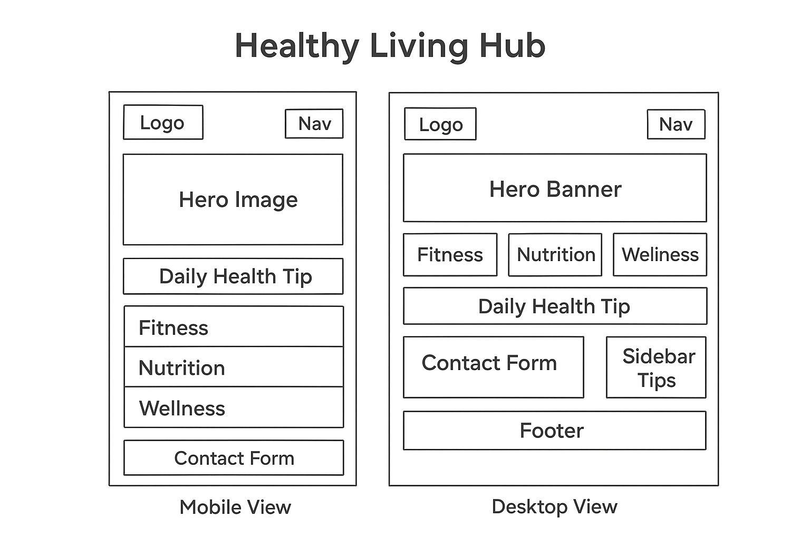

Healthy Living Hub – Website Planning Document
Site Name
Healthy Living Hub – This name reflects the site's mission to be a central resource for fitness,
nutrition, and wellness. It’s simple, memorable, and clearly communicates the purpose of the site.
Optional domain availability: healthylivinghub.org
Site Purpose
The Healthy Living Hub is designed to inspire and guide individuals toward a balanced lifestyle. It offers
curated workout routines, nutritious recipes, wellness tips, and interactive tools to help users track their
progress and stay motivated.
Scenarios
- What are some beginner-friendly workouts I can do at home?
- How can I plan healthy meals for the week using affordable ingredients?
- Where can I subscribe to receive weekly wellness tips?
Color Schema
- Forest Green (#2e8b57) – Used for headings, navigation bar, and buttons to convey vitality
and nature.
- Coral (#ff7f50) – Used for accents, call-to-action elements, and highlights to add warmth
and energy.
- Ivory (#fefdf6) – Background color for a clean, calming aesthetic.
Typography
- Heading Font: 'Montserrat', sans-serif – Used for all major headings to ensure clarity and
modern appeal.
- Body Font: 'Open Sans', sans-serif – Used for paragraphs and general content for
readability.
- Accent Font: 'Playfair Display', serif – Used for quotes and special callouts to add
elegance.
Wireframe
Homepage Layout – Mobile & Desktop Views
This wireframe illustrates the homepage layout for both mobile and desktop views. It includes a hero section,
featured content blocks for fitness, nutrition, and wellness, and a footer with contact and reference links.
